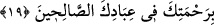

Çünkü karınca kendisine fayda veren çok şeyi bilir. Meselâ tohumun yeşermemesi için
ikiye böler. Baklagilleri ise dörde böler. Çünkü baklagiller ikiye bölününce de biter.
Tohum nemlenince, kuruması için onu yuvasından güneşe çıkarır.
Hayatü’l-hayevân’da der ki: “Karınca ne aşılanır ne de çiftleşir. Ancak ondan basit
bir parça yere düşer. Yumurta olana kadar büyür, sonra ondan karınca meydana gelir.”
“Farkına varmadan” ifâdesi, onlar sizi çiğnediklerinin farkında olmadıkları halde,
demektir. Çünkü farkında olsalardı böyle yapmazlardı. Yâni Süleyman (a.s.)’ın adâleti,
kendisinin ve ordusunun faziletinden dolayı onlar ne bir karıncayı ne de ondan büyük
bir şeyi çiğnemezler. Ancak farkında olmazlar o hâriç. Sanki karınca peygamberlerin
yanılma halleri dışında zulüm ve eziyetten mâsum/korunmuş olduklarını hissetti.
Bu karıncanın Süleyman (a.s.)’ın ordusu hakkındaki: “Onlar farkına varmadan...”
sözünün benzeri, Allah Teâlâ’nın, Muhammed (s.a.)’in ordusu hakkında buyurduğu:
“Bilmeyerek çiğnemeniz sebebiyle üzüntüye kapılmanız ihtimali olmasaydı.” (el-
Feth, 48/25) âyetidir. Bununla Allah onların bir mü’mine zarar vermeyi
kasdetmeyeceklerine dikkat çekmiştir. Şu kadar var ki Süleyman (a.s.)’ın ordusunu
öven, Allah’ın izni ile bir karıncadır. Muhammed (s.a.)’in ordusunu öven ise bizzat
Allah Teâlâ’dır. Muhammed (s.a.)’in diğer bütün peygamberlere olan fazilet ve
üstünlüğü gibi ordusunun da diğer peygamberlerin ordularına göre üstünlüğü vardır.
19. (Süleyman) onun sözünden dolayı gülümsedi ve dedi ki: Ey Rabbim! Beni,
gerek bana gerekse ana-babama verdiğin nimete şükretmeye ve hoşnut olacağın
iyi işler yapmaya muvaffak kıl. Rahmetinle, beni iyi kulların arasına kat.
Rivâyet edilir ki rüzgar bu sözü üç mil öteden Süleyman (a.s.)’ın kulağına
yetiştirdi.“(Süleyman) onun sözünden dolayı gülümsedi” ve gülmeye başladı.
Tebessüm/gülümseme, gülmenin başlangıcıdır ve sesi olmayan gülmedir. Süleyman
(a.s.)’ın tebessümünde ileri giderek onu tamamladığı ve gülmenin ilk mertebesine erdiği
kasdedilmiştir. Yâni Süleyman (a.s.) karıncanın sakınmasına ve diğerlerini
sakındırmasına, kendi faydasına olan şeyleri ve hemcinslerinin faydasına olan şeyleri
bilmesine hayret ederek tebessüm etti. Çünkü peygamberlerin gülmesi tebessüm
şeklindedir. İnsan alışkın olmadığı bir şeyi görünce veya duyunca şaşırır ve tebessüm
eder.
Bazıları demiştir ki: Süleyman (a.s.)’ın gülmesinin zâhiri, karıncanın sözüne şaşma,
bâtını ise Allah’ın kendisine ihsan ettiği karıncanın sözünü anlamaktan dolayı duyduğu
sevinç ve Allah’ın çeşitli mahlûkâtı arasında takvâ ve şefkat konusunda kendisinin ve